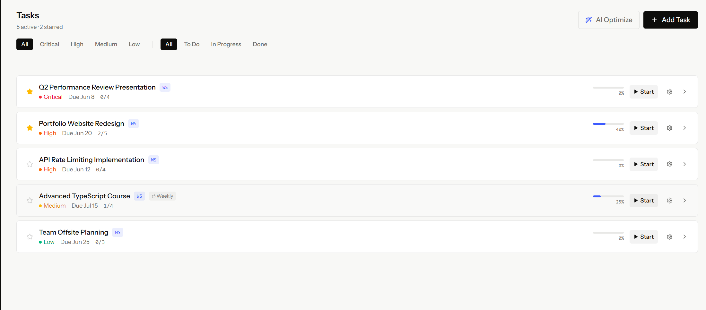
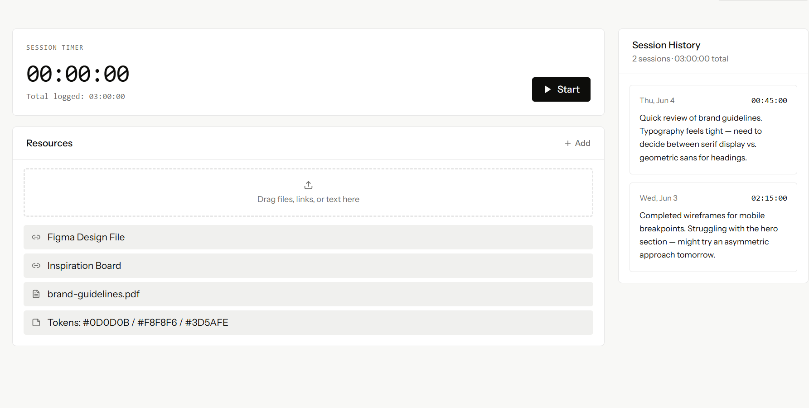

A combination of planner and to-do-list that stops you from switching between producitivity apps
Intro

Tired of jotting down ideas and tasks in multiple apps? Wanting to check your to-do-list in calendar view? Agenda is the solution you've been looking for!
To do list has its own value in that it visualize progress, offers a sense of accomplishment and helps you stay focused on the task at hand. On the other hand, calendar view is great for planning your day and visualizing how much time you have for each task. However, pure to-do lists lack the temporal context that calendar views provide, and you don't usually want to jot everything down in a calendar. Naturally, combination of both is the ideal solution. Agenda provides all elementary features for both views and allows you to switch between them. Advanced features such as recurring tasks and notifications are completely free of charge.
Agenda also allows you to sync your data from google calendar and google tasks, so you can easily migrate your data and need not worry about having to re-enter events such as invitations you received on gmail.
Work

Workspace
The other thing that makes Agenda unique is the use of workspace.
Workspace is a window where users could drag files and applications into. It helps user quickly resume working status by recovering everything the users has opened before. In workspace, users are allowed to start a session in which they could time their work and comment on their progress once they end the session. This feature encourage self-monitoring and reflection, which is crucial for productivity.
One could open up workspace for indivual task, or even, hierarchically, for each step within the task. In each workspace, users could click “start” to start the session and keep track of time spent on the task/step. They could also add resources or apps that they are using to the workspace. Agenda will keep track of the usage of these apps and assess the work based on time spent. When paused, plan to do will save the current window status so that it would be resumed once people click resume.
AI planning assistant
Agenda also has an AI planning assistant that helps users break down their tasks into smaller steps and plan out their day. The assistant could read your calendar data and learn from the user's comments and their performance on tasks to provide more personalized suggestions over time.
Our progress
We are still trying out different layouts to make Agenda more accessible and easy to start with. Questionnaires are being distributed to gather feedback from potential users. If you are interested in completing the survey, please click the link below.